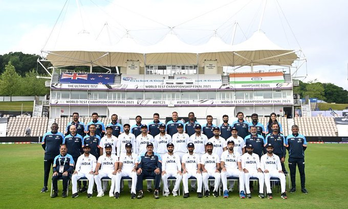

Rafael Nadal has pulled out of this year’s Wimbledon & Tokyo Olympics. The fact that there has only been 2 weeks between RG and Wimbledon, didn’t make it easier on my body to recuperate after the always demanding clay-court season, he tweeted.
Virat Kohli shared a Team India pic on his twitter
Naomi Osaka, a Japanese player, has reportedly withdrawn from Wimbledon.
Euro 2020: Netherlands Beat Austria 2-0 To Secure Round Of 16 Spot
Covid cases in the last 24 hours in India reported 67,208 New Cases
The following table list the covid cases in the last 24 hours in India.| Sl.NO | India States | Reports New Cases | Recoveries |
| 1 | Himachal Pradesh | 292 | 585 |
| 2 | Goa | 254 | 468 |
| 3 | Uttarakhand | 264 | 345 |
| 4 | Kerala | 12469 | 13614 |
| 5 | Andhra Pradesh | 6151 | 7728 |
| 6 | Delhi | 158 | 343 |
| 7 | Assam | 3477 | 4949 |
| 8 | Jharkhand | 146 | 443 |
| 9 | Haryana | 232 | 546 |
| 10 | Maharashtra | 9830 | 5890 |
| 11 | Chandigarh | 32 | 96 |
| 12 | Punjab | 726 | 1255 |
| 13 | Manipur | 495 | 458 |
Juicy Chemistry, a personal care brand, is said to have raised an undisclosed amount from Spring Marketing Capital. It had raised $6.3 million in a Series-A round of funding in March 2021.
Sense, an AI-based talent platform, is said to have raised $16 million as part of its Series C round of funding led by Avataar Ventures.
Facebook will reportedly start podcast streaming support on its platform from June 22 onwards.
Max Ventures Investment Holdings, a promoter of Max Financial Services is reported to have sold shares worth Rs.783 crores in an open market transaction.
Jet Airways shareholders have reportedly refused to approve financial results for fy 2019-20 and 2018-19.
Flipkart and Amazon India have reportedly filed separate petitions to a division bench challenging Karnataka high court’s decision to allow CCI to continue its investigation against them.
Infosys Finacle is said to have launched its digital banking SaaS to help Indian urban cooperative banks modernize their business as also the operations.
CII has reportedly called for Rs.3 lakh crore government stimulus to boost the demand and support the economy.
As per a KPMG report, the Indian online gaming segment is expected to more than double at Rs.29,000 crore with the number of gamers rising to 65.7 crores by the FY 2025.
Khadi and Village Industries Commission is said to have registered a turnover of over Rs.95,000 crores in the previous FY, its highest ever.
CCI approved the acquisition in Magma HDI General Insurance Company by India Advantage Fund S4 I & Dynamic India Fund S4 US I & NHPEA Trisul Holding B.V.
Apis Partners LLP of UK, Lok Capital, and IIFL Asset Management have together reportedly invested $45 million in RenewBuy.
To get more Indian creators on its platform, Clubhouse, a social audio app, has expanded its Clubhouse Creator First accelerator program to cover India. The program is aimed to support creators with platform, tools and resources for creating new content.
Google has committed to providing an additional $15.5 million in covid-relief work in India.